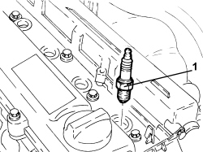

5510D10 SPARK PLUGS - R+R
- Path
- Procedures > 55 ELECTRICAL EQUIPMENT > 5510 ENGINE IGNITION > 5510D SPARK PLUGS AND LEADS > 5510D10 SPARK PLUGS - R+R
- Kind
- repair procedure (removal / refitting; the operation number is the code)
- Applies to
- engines: 1.9 JTS, 2.2 JTS, 3.2 JTS; all production periods
- Interactive page
- https://sloeber94.github.io/elrnDB/#/939010993
Applies to: engines: 1.9 JTS, 2.2 JTS; all production periods
 Removing
Removing
 Refitting
RefittingOp. 5510C14 IGNITION COIL/S - R.R.
1. Unscrew the spark plugs and remove them.

Applies to: engines: 1.9 JTS, 2.2 JTS; all production periods
Refitting
Removing- Fit the spark plugs and tighten them to the recommended torque.
Component | Fastening | dia | Value (daNm) | Validity |
|---|---|---|---|---|
Spark plugs | - | M14 | (cylinder head side) 1.8 - 2.2 | 1.9 JTS 2.2 JTS |
Applies to: engines: 3.2 JTS; all production periods
Removing
RefittingOp. 1072B50 AIR CHAMBER - R.R.
- Undo the bolts and remove the left cylinder head coil cover.
- Disconnect the electrical connections for the ignition coils.
Description | Connector | |
|---|---|---|
- | Ignition coil |
- Undo the fixing bolts and remove the ignition coils for both cylinder heads.
- Unscrew the spark plugs and remove them.
Applies to: engines: 3.2 JTS; all production periods
Refitting
Removing- Fit the new spark plugs and tighten them to the recommended torque.
Component | Fastening | dia | Value (daNm) | Validity |
|---|---|---|---|---|
Spark plugs | - | 2.0 | 3.2 JTS |
- Replace the ignition coils in their housings and secure them tightening the bolts to the recommended torque.
Component | Fastening | dia | Value (daNm) | Validity |
|---|---|---|---|---|
Ignition coils | Bolt | 1.0 | 3.2 JTS |
- Connect the electrical connections for the ignition coils.
- Place the ignition coil cover on the left cylinder head back in its housing and secure it using the bolts.
Topics linked from this page (3)
Topics that link to this page (13)
- B010 ENGINE DOES NOT START (UNDER ANY CIRCUMSTANCES)
- B013 ENGINE STARTS WITH DIFFICULTY
- D001 ENGINE NOT RUNNING SMOOTHLY / (HESISTANT)
- D002 ENGINE NOT RUNNING SMOOTHLY / (LOSING POWER)
- D003 ENGINE NOT RUNNING SMOOTHLY / (IRREGULAR OPERATION)
- D005 ENGINE DOES NOT PRODUCE BEST PERFORMANCE
- D010 ENGINE IDLE IRREGULAR
- X01 EXCESSIVE FUEL CONSUMPTION
- 5510DA SPARK PLUG STATE CHECK
- 5510DA SPARK PLUG STATUS CHECK
- 0010K60 60,000KM SERVICE
- 0010M20 120,000KM SERVICE
- 0010M80 180,000KM SERVICE